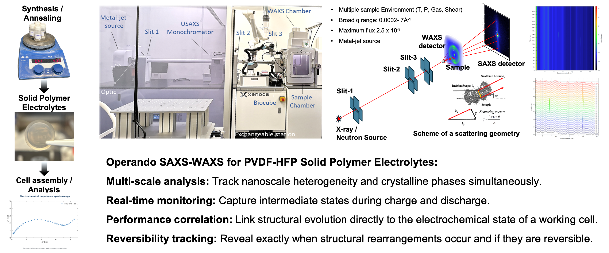

Operando Structural Evolution of PVDF-HFP Polymer Electrolytes in Lithium Batteries

This study investigates the structural evolution of PVDF-HFP/succinonitrile-based polymer electrolytes under realistic lithium-battery operating conditions. Polymer electrolytes composed of PVDF-HFP, LiTFSI, and succinonitrile were synthesized as self-supporting membranes and integrated into NMC811 | polymer electrolyte | graphite full cells. Electrochemical measurements were combined with in-situ Raman spectroscopy and operando SAXS/WAXS to monitor structural changes in the electrolyte during battery operation.
The incorporation of succinonitrile substantially enhanced room-temperature ionic conductivity, increasing from approximately 10.8 to 270 μS cm−1 in the tested formulations. Operando SAXS/WAXS and Raman measurements were used to track changes in nanoscale morphology, crystallinity, phase evolution, and structural reversibility during charge and discharge. By correlating these structural changes with electrochemical response, this work examines how electrolyte composition and polymer structure influence ion transport and full-cell performance.
Methods
Electrolyte Preparation
- PVDF-HFP / LiTFSI / Succinonitrile
- Solution Casting
- Thermal Annealing
- Self-Supporting Membrane Fabrication
- Full-Cell Assembly
Structural & Operando Characterization
- In-situ Raman Spectroscopy
- Small-Angle X-ray Scattering (SAXS)
- Wide-Angle X-ray Scattering (WAXS)
- Operando SAXS/WAXS
Electrochemical Analysis
- Ionic Conductivity
- Full-Cell Cycling
- Electrochemical Testing
- Structure–Performance Correlation